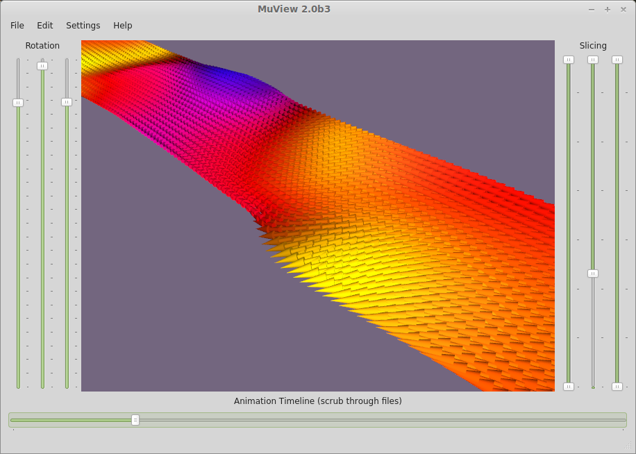

Muview2
Muview2 is a cross-platform OVF (version 1 and 2) compatible viewer intended to function with Mumax and OOMMF. The viewer provides a fast Qt/OpenGL interface that enables users to scrub through loaded files with an animation timeline, eliminating the need for manually generating image sequences and rendering animations using an awkward conglomeration of third-party software packages.
The most recent version can always be found in the Github repository, but binaries will be made available from time to time. Direct links are provided at the top of this page. If anyone can assist me in producing a portable windows binary distribution I would be very grateful.
Current Features
- Interactive 3D view of vector and scalar inputs (of arbitrary type)
- Slicing for viewing cross-sections of the geometry (hold shift to drag a fixed-width slice)
- Subdivision for fast viewing of large files
- Fine-tuned control of vector appearances for producing high quality images
- Easy scrubbing (with automatic caching) through loaded files
- Watch folders such that Muview displays new files when they are created
- Save image sequences directly from the loaded set of files
- Copy images to clipboard or save to file 
Files may be loaded from command line using standard globbing
muview SpinTorqueOscillator.out/m*.ovf
muview OOMMF-Data/Oxs*.omf
Otherwise, groups of files or entire directories can be loaded from the GUI.
Planned Features
Please let me know what would be useful! I don't plan to add any analysis capabilities, at least not in the near future.
- Direct integration with OOMMF
- More complete image export preferences